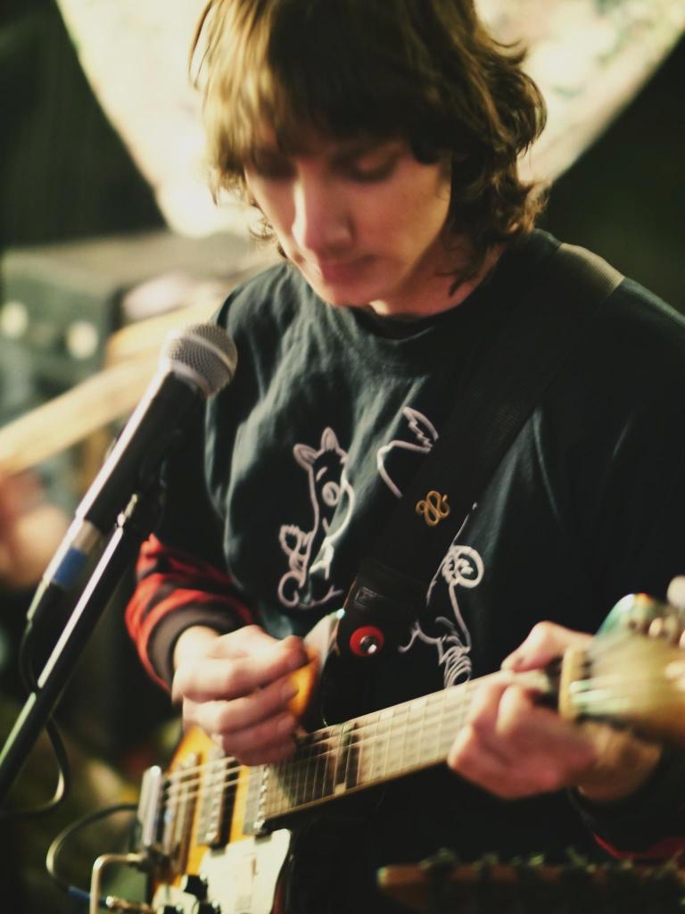

my name is jean canfield. this website serves as a portfolio & archive for my work.
other than my visual art & music practices, i run a small experimental & rock music label called
tapes scree.
i am currently living in seattle, wa.
<< back